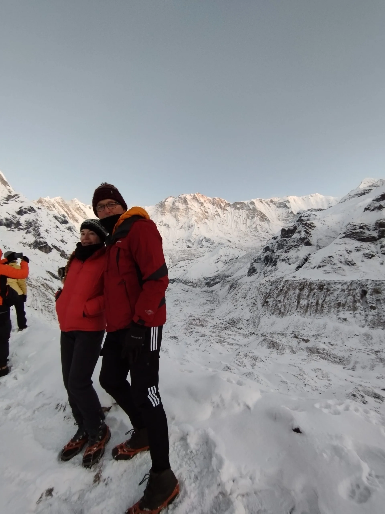
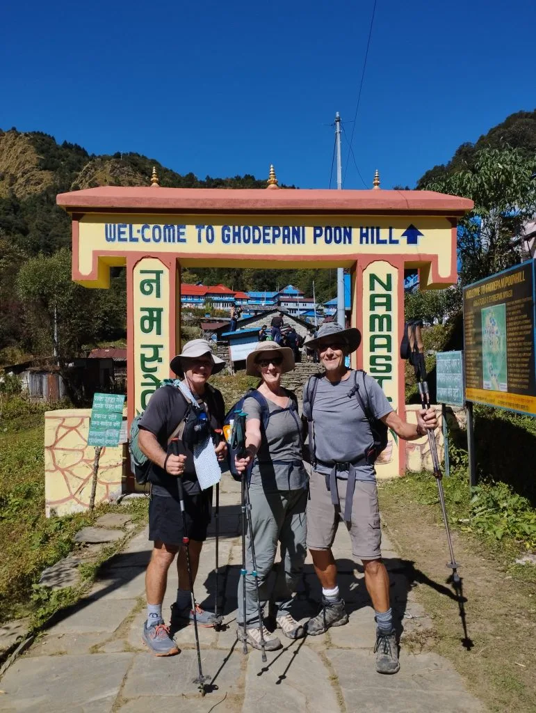
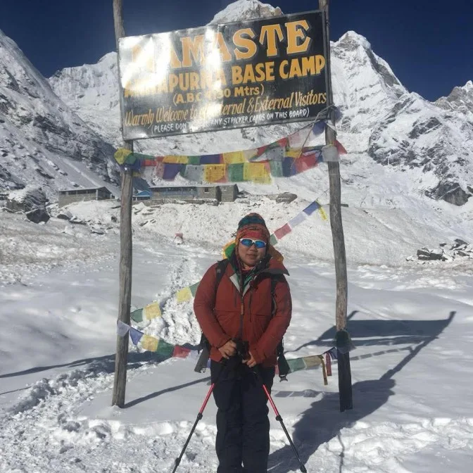
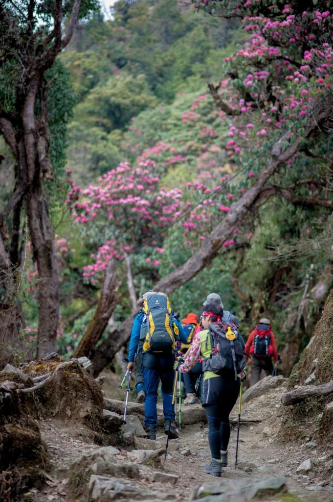
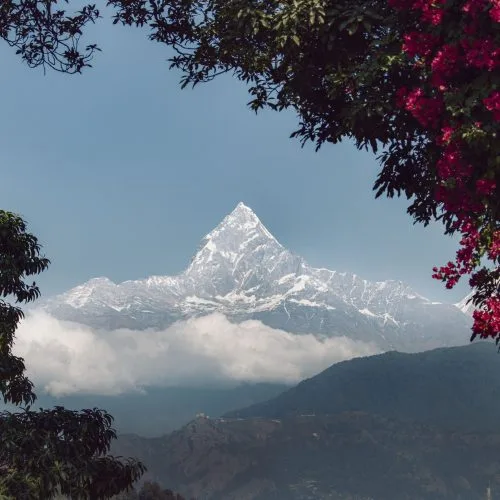

The Late-Winter Awakening: Why February is a Strategic Window
For decades, commercial trekking agencies promoted only two primary trekking windows in Nepal: autumn (October–November) and spring (March–April). Consequently, February was largely overlooked by casual hikers. Today, seasoned alpine hikers recognize February as one of the most rewarding 'shoulder' windows in the entire Himalayan calendar.
In February, the continental dry winter airstream continues to dominate the Central Himalaya. This produces an extraordinarily high percentage of cloudless, brilliant blue days where peak visibility easily exceeds 80 to 100 kilometers. Unlike October, when hundreds of trekkers line the narrow stone staircases of Chhomrong and jostle for dining tables at ABC, February offers peaceful trails where you can walk for hours immersed in the sounds of rushing glacial water, mountain wind, and whispering bamboo.
Furthermore, daylight hours expand noticeably throughout February—from approximately 10.5 hours at the beginning of the month to over 11.5 hours by month's end. This extra hour of sunlight warms morning trails faster, extends safe hiking windows, and gives photographers more leisure to capture the glowing alpine light on Annapurna I (8,091m) and Machapuchare (6,993m).
Strategic Timing Insight: If your priority is maximum solitude and pristine snowscapes, aim for February 1st to 15th. If your priority is slightly warmer afternoon temperatures, thawing water lines, and seeing early rhododendron buds burst into color in the lower valleys, plan your trek between February 16th and 28th.
February Temperature Profile: Early vs Late February Shift
Weather in the Annapurna Sanctuary during February is characterized by large diurnal temperature swings—warm, radiant sunshine during the day contrasted against biting sub-zero cold once the sun drops behind the high mountain wall.
At lower elevations such as Ghandruk (1,940m) and Chhomrong (2,170m), midday temperatures frequently reach a pleasant 14°C to 18°C, making hiking in a breathable merino t-shirt or light fleece very comfortable. However, as you ascend past Dovan (2,600m) and Deurali (3,200m) into the upper gorge, the cold intensifies significantly.
At Annapurna Base Camp (4,130m), daytime highs range between 0°C and 6°C under full sun, but drop abruptly to between -10°C and -16°C at night. In early February, night temperatures can still sink to -18°C during cold snaps.
| Trek Stage / Elevation | Midday Temp (°C) | Night / Dawn Temp (°C) | Daily Sunshine | Snow Conditions |
|---|---|---|---|---|
| Pokhara (820m) | 20°C to 24°C | 8°C to 12°C | 8 - 9 hours | Dry, lush sub-tropical |
| Chhomrong (2,170m) | 12°C to 16°C | 2°C to 6°C | 7 - 8 hours | Clear trails; rare flurries |
| Dovan / Himalaya (2,600m - 2,920m) | 8°C to 12°C | -2°C to -6°C | 5 - 6 hours | Shaded ice patches on stone steps |
| Deurali (3,200m) | 4°C to 8°C | -6°C to -10°C | 5 - 6 hours | Continuous snowline begins |
| MBC (3,700m) | 1°C to 5°C | -10°C to -14°C | 6 - 7 hours | Hard-packed snow & drifts |
| ABC (4,130m) | -2°C to 4°C | -12°C to -18°C | 6 - 7 hours | Deep snowpack across basin |

The First Crimson Buds: Lower Valley Rhododendrons & Himalayan Wildlife
One of the most enchanting aspects of late February trekking in the Annapurna Conservation Area is witnessing the onset of spring at lower elevations. While the high sanctuary remains firmly encased in ice and snow, the temperate forests between 1,800 and 2,500 meters begin their annual transformation.
In the forests surrounding Ghorepani, Tadapani, and Sinuwa, the national flower of Nepal—the Lali Gurans (Rhododendron arboreum)—produces its first crimson, scarlet, and pink blooms during the final ten days of February. The vivid scarlet blossoms framed against glistening snow-draped peaks create world-class photographic opportunities that early autumn trekkers completely miss.
Wildlife is also more visible in February than during busy peak months. With minimal human noise and commotion along the trail, trekkers frequently spot Himalayan Monals (Danphe, Nepal's iridescent national bird) foraging in the snowdrifts, troops of gray langur monkeys leaping through oak branches near Bamboo, and agile Himalayan Thar clinging to the vertical rock faces opposite Deurali.

Trail Conditions: Snow, Melt-Freeze Cycles & Wet Slab Realities
Understanding trail conditions in February requires grasping the 'melt-freeze' diurnal cycle. Because February afternoons are sunnier and warmer than January, surface snow melts slightly during the hottest hours of the day (12:00 PM to 2:30 PM). As soon as the sun dips behind the ridge at 3:30 PM, this slush refreezes into glazed sheets of solid ice.
This dynamic creates specific trail challenges across different sections of the route:
- Nayapul to Chhomrong: Completely dry, well-maintained stone steps. Mild daytime temperatures and clear walking conditions.
- Chhomrong to Dovan: Shaded sections near stream crossings and stone staircases below Sinuwa and Bamboo develop invisible black ice overnight. Trekkers hiking early without looking closely can suffer sudden slips.
- Dovan to Deurali: The snowline generally establishes itself between Himalaya Hotel and Hinku Cave. The trail here narrows into a packed single-track trench bordered by snowdrifts. Microspikes are indispensable here.
- Deurali to MBC and ABC: Deep, consolidated snowpack. In the morning before 10:00 AM, the crust is solid and easy to walk on with microspikes. By mid-afternoon, warm sunshine softens the crust, causing hikers to 'post-hole' (sink knee-deep into soft snow) if stepping off the compacted track.

Avalanche Caution: Rising Temperatures & Afternoon Sun on Snow Couloirs
While January brings the risk of dry powder avalanches after major blizzards, February introduces a different mechanism: wet loose and thermal slab avalanches. As February sun intensifies, south-facing couloirs on the lower walls of Machapuchare and Hiunchuli absorb intense solar radiation. By early to mid-afternoon, heavy, moisture-laden snow loses cohesion and slides into the canyon.
The danger is concentrated in the steep gorge section between Himalaya, Deurali, and Machapuchare Base Camp. Here, sheer vertical rock walls funnel snow directly across the river trail.
February Avalanche Operating Protocol: In February, always cross the Deurali–MBC corridor between 6:30 AM and 10:00 AM while the snowpack remains solidly frozen. Never hike through the gorge during the heat of the afternoon (12:00 PM to 3:00 PM). If fresh snowfall occurs or local ACAP wardens flag active slides, use the designated winter high trail across the eastern river bank.
| Factor | Early February (Feb 1 - 14) | Late February (Feb 15 - 28) | Strategic Trekker Action |
|---|---|---|---|
| Primary Avalanche Risk | Dry slab / wind drifts after storms | Wet slab / thermal solar slides | Early starts; monitor midday slope temperatures. |
| Snow Depth at ABC | 40 cm - 90 cm (deep powder) | 30 cm - 70 cm (consolidated pack) | Gaiters mandatory; stay centered on packed track. |
| Morning Ice Slickness | Extremely hard blue ice | Melt-freeze crust | Microspikes mandatory from Dovan upwards. |
| Upper Teahouse Openings | 1 - 2 lodges per village | 2 - 3 lodges per village (reopening) | Pre-confirm open lodges through guide network. |
Crowd Dynamics & Teahouses: The Transition to Spring Opening
One of the prime luxuries of trekking in February is the teahouse atmosphere. In October or April, teahouse dining halls are deafeningly loud, bedrooms are booked to capacity, and food orders can take two hours to emerge from overburdened kitchens.
In February, the atmosphere is intimate, peaceful, and authentically Sherpa and Gurung. Trekkers gather closely around the central dining hall stove in the evening, sharing trail stories with lodge owners, guides, and a handful of fellow international hikers. Lodge hosts have the time to converse, replenish your dal bhat with genuine warmth, and provide personalized advice on morning trail conditions.
By mid to late February, teahouse owners who descended to Pokhara for the winter freeze return to reopen their properties in preparation for the spring rush. This means more lodges open their doors, grocery supplies are freshly restocked, and competition for beds remains essentially non-existent.

Paced 8-Day February Itinerary: Modi Khola to Sanctuary Basin
This 8-day itinerary is specifically structured for February conditions. It incorporates early morning departures for high gorge sections, avoids late afternoon travel when refreezing occurs, and ensures gradual altitude acclimatization up to 4,130 meters:
| Day | Route Segment | Distance | Trek Time | Overnight Altitude | February Tactical Focus |
|---|---|---|---|---|---|
| Day 01 | Drive Pokhara to Matque (3 hrs); trek to Chhomrong | 8.5 km | 4.5 - 5 hrs | 2,170 m | Enjoy pleasant valley sun; stone stairs clear of snow. |
| Day 02 | Chhomrong to Dovan via Sinuwa & Bamboo | 10.8 km | 5.5 - 6 hrs | 2,600 m | Watch for morning black ice on damp stones descending to river. |
| Day 03 | Dovan to Deurali via Himalaya Hotel | 8.2 km | 4.5 - 5 hrs | 3,200 m | Put on microspikes past Hinku Cave; arrive in Deurali before 2:30 PM. |
| Day 04 | Deurali to Machapuchare Base Camp (MBC) | 5.8 km | 3.5 - 4.5 hrs | 3,700 m | Depart at 6:45 AM to cross avalanche chutes during cold, stable morning hours. |
| Day 05 | MBC to Annapurna Base Camp (ABC) exploration | 4.2 km | 2.5 - 3.5 hrs | 4,130 m | Scenic gentle moraine ascent; full afternoon exploring frozen sanctuary basin. |
| Day 06 | ABC sunrise shoot; descend to Bamboo | 15.0 km | 6.5 - 7 hrs | 2,310 m | Watch footing on slippery hardpack descending from Deurali to Dovan. |
| Day 07 | Bamboo to Jhinu Danda (Hot Springs) | 9.0 km | 4.5 - 5 hrs | 1,780 m | Soak aching muscles in riverside thermal hot springs at Jhinu. |
| Day 08 | Jhinu Danda to Matque/Siwai; drive to Pokhara | 4.0 km | 2 hrs trek + 3 hrs drive | 820 m | Cross suspension bridge; celebratory lakeside dinner in Pokhara. |

February Gear Checklist: Microspikes, 4-Season Boots & Thermal Management
Packing for February demands preparing for two divergent climatic realities: balmy spring afternoons at the trailheads and brutal sub-zero alpine conditions above 3,500 meters. The golden rule is versatile layering:
| Gear Category | Recommended Specification | Why It Is Crucial for February |
|---|---|---|
| Sleeping Bag | 800-fill down, -15°C to -20°C comfort rating | Unheated bedrooms drop to -10°C; lodge quilts are bulky and cold. |
| Traction Cleats / Microspikes | 10-12 stainless steel tooth trail spikes | Mandatory for traversing packed snow and blue ice between Dovan and ABC. |
| Footwear | Waterproof Gore-Tex high-ankle trekking boots | Prevents freezing soaked feet when walking through afternoon slush. |
| Down Parka | Heavy expedition-weight down jacket (700-800 fill) | Essential for frigid sunrise photography and unheated dining halls. |
| Gaiters | Waterproof breathable low or mid-calf gaiters | Prevents snowdrifts from entering boot tops during afternoon post-holing. |
| Eyewear | Polarized Cat 3 or Cat 4 alpine glacier glasses | Crucial for protecting corneas against intense snow reflection at 4,000m. |
| Trekking Poles | Sturdy aluminum/carbon poles with snow baskets | Maintains balance on slippery descents and tests snow crust stability. |
In addition, pack high-SPF mineral sunscreen (SPF 50+), zinc lip balm, warm fleece-lined windproof gloves, thin touchscreen liner gloves, and at least two pairs of heavyweight merino wool trekking socks.
Photography in February: Golden Light, Clean Horizons & Fluted Ridges
February is widely considered by professional mountain photographers to be the premier month for capturing the Annapurna massif. Three atmospheric factors combine to create world-class photographic shooting conditions:
- Zero Atmospheric Dust: Monsoon moisture and autumn haze are gone, and pre-monsoon agricultural burning has not yet started. The air is chemically clean, rendering peak horizons with razor-sharp contrast.
- Sun Elevation & Golden Hour: Because the sun traverses lower in the southern sky in February, golden hour light strikes the mountain peaks at dramatic oblique angles, casting deep shadows into glacial couloirs and fluted ridges.
- Alpenglow Palette: At dawn inside the Sanctuary, the first rays hit the summit pyramid of Annapurna I around 6:35 AM, bathing the 8,091m summit in a palette of pale pink, molten orange, and golden amber before descending to illuminate Machapuchare and Gangapurna.

Altitude, Cold Air & Hydration: Acclimatization Strategy
Trekking to 4,130 meters at Annapurna Base Camp represents a serious high-altitude challenge, especially in cold air. Cold temperatures restrict blood vessels, elevate blood pressure, and cause trekkers to breathe harder, rapidly losing bodily moisture into the desiccated alpine atmosphere.
Follow these essential medical protocols to acclimatize seamlessly in February:
- The 'Climb High, Sleep Low' Discipline: When you arrive at Deurali (3,200m) or MBC (3,700m) by early afternoon, rest for an hour, then take a gentle 45-minute acclimatization walk 150 vertical meters above the village before descending for dinner.
- The Warm Fluid Mandate: Dehydration is the #1 accelerant of Acute Mountain Sickness (AMS). Drink 3.5 to 4 liters of warm fluids daily. Hot lemon ginger honey tea, garlic broth, and boiled water are ideal. Avoid alcohol and excessive coffee above Dovan.
- Recognizing Early AMS Symptoms: Persistent throbbing headache, loss of appetite, nausea, and unusual dizziness indicate your body is struggling to adapt. Never ascend with active AMS symptoms. If symptoms worsen, descent is the only definitive cure.
Teahouse Amenities: Food, Solar Showers, Charging & Thawing Pipes
Teahouses along the ABC route provide hearty sustenance, but daily comforts evolve as you ascend into the sub-zero zone:
- Nutrition & Meals: Teahouses serve freshly cooked Nepalese, Tibetan, and Western dishes. Traditional Dal Bhat (steamed rice, spiced lentil soup, seasonal vegetables, and pickles) is the ultimate fuel—it is served fresh, piping hot, and comes with unlimited free refills. Hot oatmeal porridge, Tibetan bread, and noodle soups provide excellent morning warmth.
- Water Supply & Thawing: Below Chhomrong, running tap water operates normally. Above Dovan and Deurali, external pipes freeze overnight and thaw around 10:00 AM under direct sun. Always purchase boiled water in the evening (NPR 150–250 per liter) and keep your Nalgene bottle inside your sleeping bag.
- Hot Showers: Gas geyser hot showers are available at Chhomrong, Sinuwa, and Bamboo (NPR 300–400). At Deurali and ABC, freezing ambient temperatures make taking a shower risky for hypothermia; stick to sponge baths with wet wipes.
- Electricity & Charging: Dining rooms feature solar and hydro-electric power points. Charging a phone or power bank costs NPR 200–400 per device at upper lodges. Keep devices insulated to prevent cold drain.
Permits & Regulations: ACAP, TIMS & Mandatory Certified Guide
All foreign trekkers entering the Annapurna region require two mandatory permits, verified at official ACAP checkposts in Birethanti, Chhomrong, and Ghandruk:
- Annapurna Conservation Area Project (ACAP) Entry Permit: NPR 3,000 (~USD $23) per person for foreign nationals; NPR 1,000 for SAARC nationals. Children under 10 enter free.
- Trekkers' Information Management System (TIMS) Card: NPR 2,000 (~USD $15) per person.
- Mandatory Guide Regulation: Since April 2023, the Nepal Tourism Board mandates that foreign hikers trek with a licensed trekking guide registered through a certified agency. In February, this rule is an invaluable safety asset: your guide monitors daily avalanche bulletins, books open teahouse rooms, navigates snowy trail bifurcations, and handles emergency communication.
Trek Budgeting: Teahouses, Meals, Transport & Equipment Costs
An 8-day Annapurna Base Camp trek in February is exceptionally cost-effective. Lower off-season transport and lodging costs make it accessible to budget-conscious and luxury trekkers alike. Below is an itemized breakdown of expected expenses:
| Expense Category | Cost in NPR | Cost in USD | Notes & Recommendations |
|---|---|---|---|
| Permits (ACAP + TIMS) | NPR 5,000 | ~$38 | Fixed official government fees per trekker. |
| Private Jeep (Pokhara to Matque round-trip) | NPR 12,000 - 15,000 total | ~$90 - $115 total | Shared among group passengers; comfortable 4WD vehicle. |
| Teahouse Lodging (7 nights) | NPR 600 - 1,000 / night | ~$5 - $8 / night | Private twin-share room; clean bedding and blankets. |
| Daily Meals & Hot Drinks (8 days) | NPR 3,200 - 4,200 / day | ~$24 - $32 / day | Covers 3 hot meals, tea, and boiled drinking water daily. |
| Hot Showers & Device Charging | NPR 400 - 700 / day | ~$3 - $5 / day | Pay-per-use amenities at higher altitude lodges. |
| Licensed Trekking Guide | NPR 3,500 - 4,500 / day | ~$26 - $34 / day | Includes guide's daily wage, food, lodging, and insurance. |
| Porter (Optional, carries 18-20kg) | NPR 2,800 - 3,500 / day | ~$21 - $26 / day | Highly recommended for carrying heavy winter sleeping gear. |
February ABC Trekking: Who It Suits & Essential Golden Rules
The Annapurna Base Camp trek in February is one of the Himalaya's best-kept secrets. It bridges the gap between deep winter stillness and the vibrant life of spring. If you are prepared for cold nights, carry dependable microspikes, and respect the natural rhythms of the Modi Khola canyon, you will be rewarded with a world-class trekking adventure free from the clamor of peak crowds.
To guarantee a flawless journey, memorize these five core rules:
- Start Early Every Day: Hit the trail by 7:00 AM. You will experience frozen, stable snow crusts, avoid afternoon avalanche hazards, and arrive at your lodge well before the late-afternoon temperature drop.
- Invest in Warm Sleep Systems: Do not rely exclusively on teahouse blankets. A -15°C to -20°C comfort-rated down sleeping bag guarantees restorative sleep and prevents cold-induced exhaustion.
- Strap on Microspikes at the First Sign of Ice: Do not wait until you slip. Microspikes give you confident traction on shaded stone staircases and hard-packed snow.
- Keep Your Electronics Warm: Store your smartphone, camera batteries, and power banks inside an insulated pouch at the bottom of your sleeping bag every night.
- Trek With a Trusted Local Partner: Partner with a reputable local agency like Igloo Himalaya Treks. Our certified guides ensure your safety, manage winter logistics seamlessly, and share the deep cultural richness of the Annapurna Sanctuary.


Ready to Experience the Himalayas?
Whether you are preparing for high-altitude trekking, cultural circuits, or alpine summit expeditions, start planning a bespoke journey tailored to your fitness, travel season, and style.